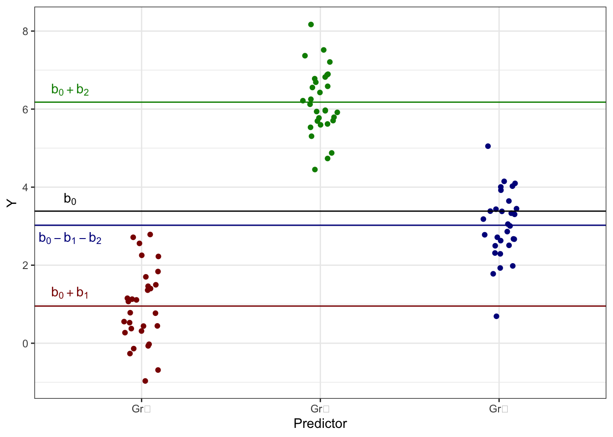
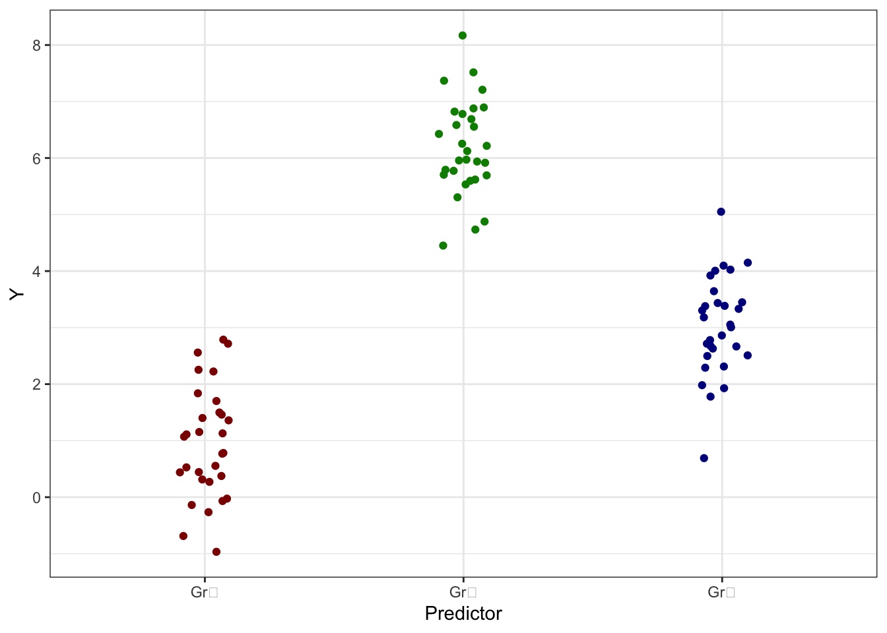
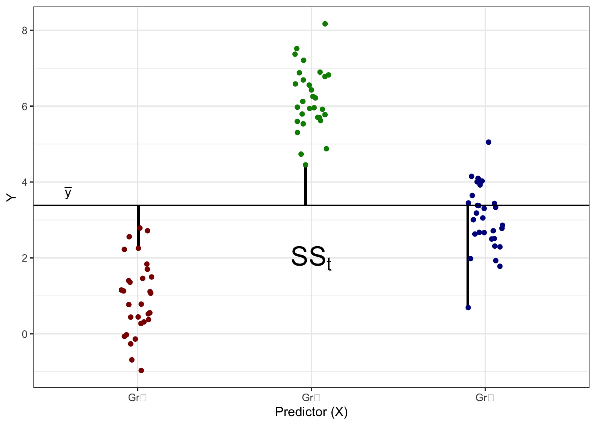
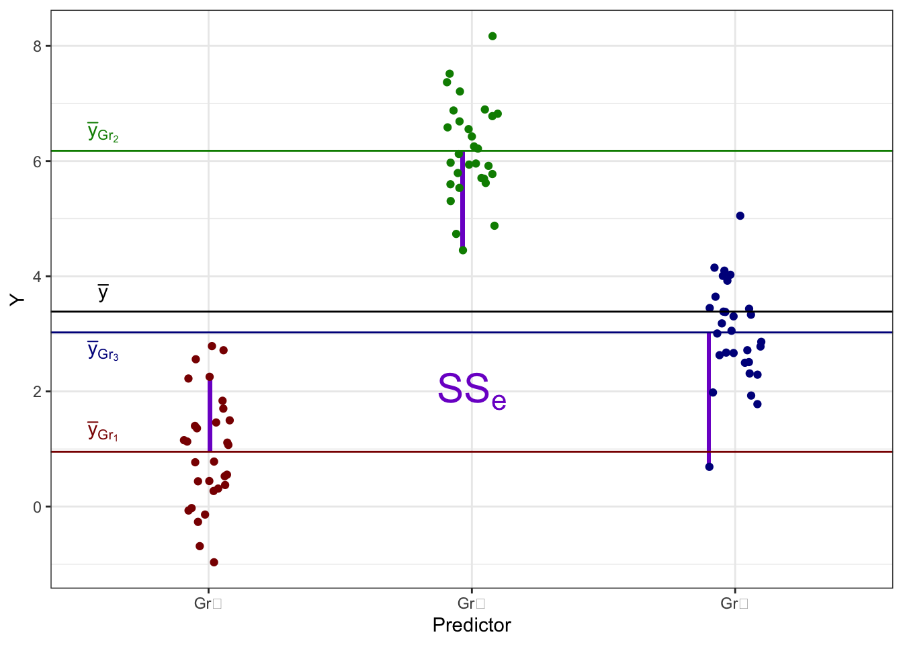
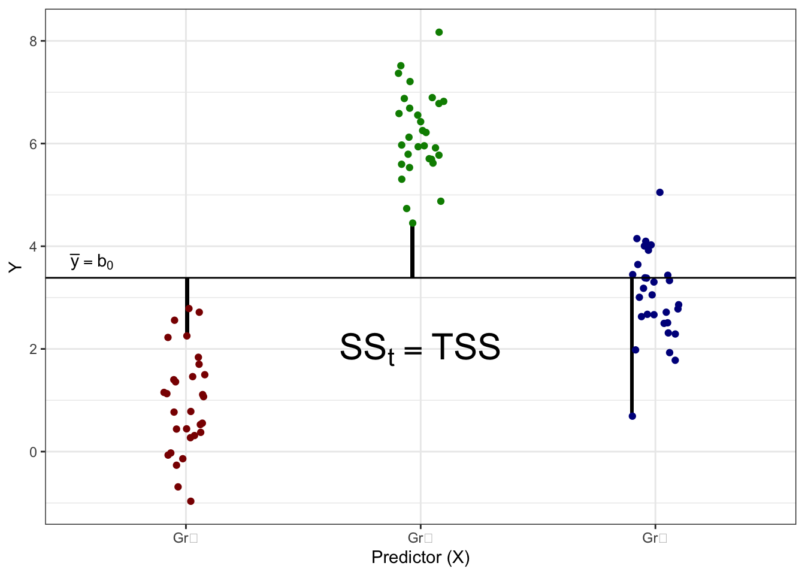
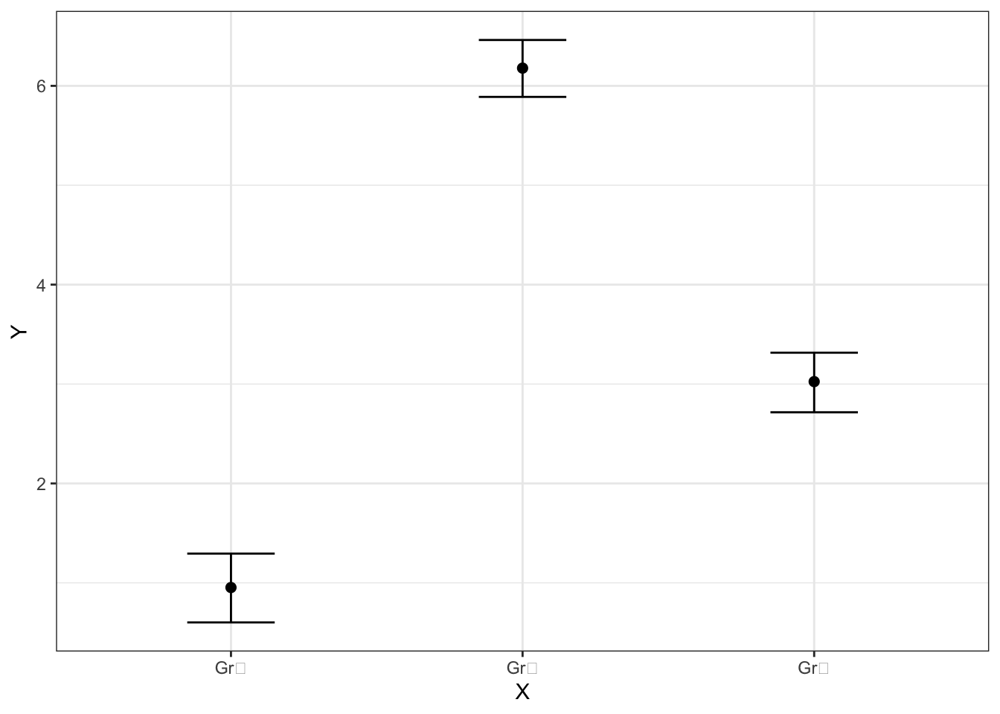

9 L9 // Дисперсионный анализ. Ковариационный анализ
Мы знаем, что в регрессионную модель можно включать как количественные, так и категориальные предикторы. Более того, мы знаем, как при включении категориальных предикторов изменяется модель и что значат коэффициенты при этих предикторах. Теперь рассмотрим случай, когда в модели останутся только категориальные предикторы.
9.1 Регрессия только с категориальными предикторами
Пусть у нас есть один категориальный предиктор с двумя уровнями, то есть у нас есть две группы наблюдений. Если из моделей, рассмотренных ранее, мы исключим количественные предикторы, то получим модель такого вида:
\[ \hat y_i = b_0 + b_1 I, \]
где \(I\) — переменная-индикатор, обозначающая, к какой группе принадлежит наблюдение (\(I = 0\), если наблюдение относится к первой группе 1, и \(I = 1\), если наблюдение относится ко второй группе). Итого, получается, что в одной модели заключены как бы две сразу:
\[ \begin{cases} I = 0 &: \hat y_i = b_0 \\ I = 1 &: \hat y_i = b_0 + b_1 \end{cases} \]
Что же будет, если у нас возникнет не две группы по какой-то категориальной переменной, а три? Тогда одной переменной-индикатором мы уже не обойдемся — нам понадобится две индикаторные переменные. Получится следующая модель:
\[ \hat y_i = b_0 + b_1 I_{\text{Gr}_2} + b_2 I_{\text{Gr}_3}, \]
где
- \(I_{\text{Gr}_2}\) — переменная-индикатор, обозначающая принадлежность наблюдения ко второй группе (\(I_{\text{Gr}_2} = 0\), если наблюдение не относится ко второй группе, и \(I_{\text{Gr}_2} = 1\), если наблюдение относится ко второй группе)
- \(I_{\text{Gr}_3}\) — переменная-индикатор, обозначающая принадлежность наблюдения ко второй группе (\(I_{\text{Gr}_3} = 0\), если наблюдение не относится ко третьей группе, и \(I_{\text{Gr}_3} = 1\), если наблюдение относится к третьей группе). Итого, получается, что в одной модели заключены целых три сразу:
\[ \begin{cases} I_{\text{Gr}_2} = 0 \wedge I_{\text{Gr}_3} = 0 &: \hat y_i = b_0 & (\text{Group 1})\\ I_{\text{Gr}_2} = 1 \wedge I_{\text{Gr}_3} = 0 &: \hat y_i = b_0 + b_1 & (\text{Group 2}) \\ I_{\text{Gr}_2} = 0 \wedge I_{\text{Gr}_3} = 1 &: \hat y_i = b_0 + b_2 & (\text{Group 3}) \end{cases} \]
Мы вводили в модели переменные-индикаторы для того, чтобы обозначит категориальные переменные и понять, как они меняют модель. Теперь же, когда мы работаем только с категориальными предикторами, мы можем обозначить перемеренные-индикаторы как \(x_j\), чтобы еще более наглядно увидеть, что модель с категориальными предикторами полностью совпадает с моделью обычной линейной регрессии. Значениями, которые принимают переменные-индикаторы, кодируются группы наблюдений. Мы можем составить следующую таблицу кодировки:
| Группа | \(I_1 = x_1\) | \(I_2 = x_2\) |
|---|---|---|
| \(\text{Gr}_1\) | 0 | 0 |
| \(\text{Gr}_2\) | 1 | 0 |
| \(\text{Gr}_3\) | 0 | 1 |
Таким образом, мы можем записать модель следующим образом:
\[ \hat y_i = b_0 + b_1 x_1 + b_2 x_2 \]
Обратим внимание, что сейчас мы рассматривает три группы и у нас две индикаторные переменные. В случае, если у нас \(k\) групп, то индикаторных переменных будет \(k-1\):
\[ \hat y_i = b_0 + b_1 x_1 + b_2 x_2 + \dots + b_{k-1}x_{k-1} \]
| Группа | \(x_1\) | \(x_2\) | \(\dots\) | \(x_{k-2}\) | \(x_{k-1}\) |
|---|---|---|---|---|---|
| \(\text{Gr}_1\) | 0 | 0 | \(\dots\) | 0 | 0 |
| \(\text{Gr}_2\) | 1 | 0 | \(\dots\) | 0 | 0 |
| \(\text{Gr}_3\) | 0 | 1 | \(\dots\) | 0 | 0 |
| \(\vdots\) | \(\vdots\) | \(\vdots\) | \(\ddots\) | \(\vdots\) | \(\vdots\) |
| \(\text{Gr}_{k-1}\) | 0 | 0 | \(\dots\) | 1 | 0 |
| \(\text{Gr}_k\) | 0 | 0 | \(\dots\) | 0 | 1 |
Однако вернемся к случаю трех групп, так как этот случай достаточно прост и удобен для рассмотрения имеющейся ситуации. Попробуем визуализировать связь между некоторой целевой каоличественной переменной и категориальным предиктором. Получится следующая картинка:
Мы видим, что у нас есть категориальный предиктор, которые разбивает наши наблюдения на три группы — Gr₁, Gr₂ и Gr₃ — в каждой из которых есть определенный разборс значений. Само же положение это группы на вертикальной оси определяется средним целевой переменной в данной группе. Таким образом, мы можем дополнить визуализацию этими средними значениями (цвет добавлен для лучшего визуального разделения групп):
Мы видим, что с точки зрения линейной модели у нас есть три интерсепта, а с точки зрения данных эти три интерсепта являются среднии групп наблюдений. То есть,
\[ \cases{ \bar y_{\text{Gr}_1} = b_0 \\ \bar y_{\text{Gr}_2} = b_0 + b_1 \\ \bar y_{\text{Gr}_3} = b_0 + b_2 \\ } \] или на картинке:
9.1.1 Параметризация индикаторов
Способ подбора коэффициентов модели, который мы только что рассмотрели, называется параметризацией индикаторов (dummy coding, treatment parametrization, reference cell model). В это способе получается следующее:
- одна из групп по категориальной переменной берется в качестве базовой — её интерсепт будет обозначен как \(b_0\)
- для остальных групп подбираются поправочные коэффициенты (\(b_1\), \(b_2\), \(...\), \(b_{k-1}\)), которые определяют различия в интерсептах между этими группами и базовым уровнему
Собственно, это ровно то, что и было у нас на предыдущих лекциях.
9.1.2 Параметризация эффектов
Однако на те же данные можно посмотреть и иным способом. Не всегда логично брать какую-то группу наблюдений в качестве базового уровня, к тому же в зависимости от того, какую из групп мы рассматриваем как базовую, меняются значения коэффициентов модели. Есть ли какой-то способ записать более «обобщённую» модель?
Да, он есть. Давайте рассматривать в качестве базового уровня среднее по всем наблюдениям. Тогда коэффициентами при переменных в модели будут отклонения групповых средних от общего среднего. Вот картинка:

Сама математическая запись модели не изменится:
\[ \hat y_i = b_0 + b_1 x_1 + b_2 x_2 \]
однако интерпретация коэффициент здесь будет иная: теперь коэффициенты показывают отклонения [средних] групп от общего среднего, то есть коэффициенты показывают эффект предиктора для конкретной группы. Данный способ подбора называется параметризацией эффектов (effects coding, sum-to-zero parameterization). Отдельная интересность здесь в том, как считается интерсепт для третьей группы Gr₃ — он оказывает равен \(b_0 - b_1 - b_2\). Это связано с таблицей кодировки, использующейся в данном способе подбора коэффициентов:
| Группа | \(x_1\) | \(x_2\) |
|---|---|---|
| \(\text{Gr}_1\) | 1 | 0 |
| \(\text{Gr}_2\) | 0 | 1 |
| \(\text{Gr}_3\) | −1 | −1 |
Чтобы модель работала, сумма по колонкам в таблице кодировки должна быть равна нулю, поэтому возникают −1.
9.2 Однофакторный дисперсионный анализ
Задумаемся:
- у нас есть некоторая странная, но занимательная модель, получившаяся с использованием параметризации эффектов
- у нас есть данные, которые неопределенны и вариативны
- данные мы собирали для того, чтобы изучить связь между целевой переменной и предиктором
Разумно предполагать, что если связь между целевой переменной и предиктором есть, то мы будем наблюдать какую-то такую картинку:

Если же связи нет, то будет наблюдатся что-то такое:
Описать эти ситуации можно, изучив структуру изменчивости данных.
9.2.1 Структура изменчивости данных
При изучении линейной регрессии мы знакомились с такой метрикой изменчивости, как сумма квадратов — используем её и здесь. В данных есть общая изменчивость, или общая сумма квадратов (total sum of squares, \(\text{SS}_t\)) — отклонения наблюдений от общего среднего значения:

Есть в данных факторная изменчивость, или объясненная сумма квадратов (explained sum of squares, \(\text{SS}_X\)) — отклонения групповых средних от общего среднего:
Эта изменчивость складывается из показателей того, насколько каждая группа в среднем отклоняется от общего среднего. Здесь надо сделать замечание, что термин фактор и факторная изменчивость возникает здесь по причине того, что часть изменчивости данных объясняется действием некоторого фактора, который в терминах математических моделей мы называем предиктором.
И в данных также остается случайная изменчивость, или сумма квадратов ошибок (error sum of squares, \(\text{SS}_e\)) — отклонения наблюдений от своих групповых средних:

С точки зрения математической модели эти три изменчивости — \(\text{SS}_t\), \(\text{SS}_X\) и \(\text{SS}_e\) — совпадают соответственно с \(\text{TSS}\), \(\text{ESS}\) и \(\text{RSS}\).

Математически эти изменчивости записываются так:
\[ \begin{split} \text{TSS} &= \text{SS}_t = \displaystyle \sum_{i=1}^n (\bar y - y_i)^2, \\ \text{ESS} &= \text{SS}_X = \displaystyle \sum_{j=1}^k n_j \cdot (\bar y - \bar y_j)^2, \\ \text{RSS} &= \text{SS}_e = \displaystyle \sum_{j=1}^k \sum_{i=1}^{n_j} (\bar y_j - \bar y_{ji})^2, \end{split} \]
где \(n\) — общее количество наблюдений, \(n_j\) — количество наблюдений в конкретной \(j\)-ой группе, \(k\) — количество групп.
Окей, с самой структурой изменчивости разобрались. Теперь вернемся к двум ситуациям, которые мы хотели описать:
- связь межде предиктором и целевой переменной есть:
- связи между предиктором и целевой переменной нет:
Поскольку рассматривать общую изменчивость не слишком осмысленно, в том числе потому что выполяется соотношение \(\text{TSS} = \text{ESS} + \text{RSS}\) или \(\text{SS}_t = \text{SS}_X + \text{SS}_e\), рассмотрим, как в двух интересующих нас случаях соотносятся объясненная (факторная) и случайная (остаточная) изменчивости.
- В первом случае, когда закономерность есть, мы получим ситуацию, когда факторная изменчивость будет больше, чем случайная, то есть \(\text{SS}_X > \text{SS}_e\).
- В втором случае, когда закономерности нет, мы получим ситуацию, когда факторная изменчивость будет меньше (или, по крайней мере, равна), чем случайная, то есть \(\text{SS}_X \leq \text{SS}_e\).
Получается, используя эти изменчивости мы можем изучать гипотезы о связи между количественной и категориальной переменной.
9.2.2 Тестирование гипотез в однофакторном дисперсионном анализе
Чтобы перейти к тестированию гипотез, нам необходимо сами эти [статистические] гипотезы сформулировать. Исходя из внимательного рассмотрения картинок выше, мы можем получить следующие гипотезы для дисперсионного анализа:
\[ \begin{split} H_0&: \mu_0 = \mu_1 = \mu_2 = \ldots = \mu_k \\ H_1&: \exists \, j_1, j_2: \mu_{j_1} \neq \mu_{j_2} \end{split} \]
Нулевая гипотеза говорит, что средние всех групп в генеральной совокупности равны между собой. Альтернативная гипотеза говорит, что существуют хотя бы две группы, cредние которых различаются. Для тестирования этой гипотезы мы могли бы посмотреть на отношение между объясненной и остаточной изменчивостями (суммами квадратов), но количество наблюдений в разных группах имеет право на совпадать, поэтому используют средние квадраты — иначе, дисперсии:
\[ \begin{split} \text{MS}_t &= \frac{\text{SS}_t}{n-1} = \frac{\text{TSS}}{n-1} = \frac{\sum_{i=1}^n (\bar y - y_i)}{n-1} \\ \text{MS}_X &= \frac{\text{SS}_X}{k-1} = \frac{\text{ESS}}{k-1} = \frac{n_j \cdot \sum_{j=1}^k (\bar y - \bar y_j)}{k-1} \\ \text{MS}_e &= \frac{\text{SS}_e}{n-k} = \frac{\text{RSS}}{n-k} = \frac{\sum_{j=1}^k \sum_{i=1}^{n_j} (\bar y_j - \bar y_{ji})}{n-k} \end{split} \]
Собственно, поэтому анализ и называется дисперсионный (analysis of variance, ANOVA). Статистика, используемая для тестирования заявленной гипотезы — это F-статистика, значение которой рассчитывается так:
\[ F = \frac{\text{MS}_X}{\text{MS}_e} \overset{H_0}{\thicksim} F(\text{df}_{\text{MS}_X}, \text{df}_{\text{MS}_e}) \]
Эта статистика подчиняется F-распределению со степенями свободы \(\text{df}_{\text{MS}_X} = k - 1\) и \(\text{df}_{\text{MS}_e} = n - k\). Таким образом, если
- не получено статистически значимого результата, то у нас нет оснований говорить, что между какими-либо группами есть различия, а если
- получен статистически значимый результат, то мы можем говорить, что между какими-либо двумя группами есть различия.
9.2.3 Размер эффекта
Когда мы обсуждали тестирование статистических гипотез, мы также упоминали о размере эффекта — метрики, которая позволяет оценить силу связи между переменными. В случае корреляционного анализа нам повезло, и сам коэффициент корреляции был размером эффекта для себя же. В случае линейной регрессии мы вроде бы не говорили о размере эффекта, однако если мы внимательно всмотримся в \(R^2\), то осознаем, что он и является метрикой, позволяющей говорить о силе связи между переменными — в случае множественной линейной регрессии о силе связи между целевой переменной и несколькими предикторами сразу.
Для дисперсионного анализа также необходима специальная метрика. Она придумана и называется \(\eta^2\). Она считается следующим образом:
\[ \eta^2 = \frac{\text{ESS}}{\text{TSS}} = \frac{\text{SS}_X}{\text{SS}_e} \]
Из формулы видно, что размер эффекта — это доля объясненной фактором дисперсии от всей дисперсии данных, что в общем-то весьма логично.
Для интерпретации значения размера эффекта предлагаются следующие пороговые значения:
| Значение \(\eta^2\) | Размер эффекта |
|---|---|
| \(0.01\) | Малый (small) |
| \(0.06\) | Средний (medium) |
| \(0.14\) | Большой (large) |
9.2.4 Попарные сравнения
Статистически значимый результат дисперсионного анализа приводит нас к интересному выводу: мы обнаружили различия между хотя бы двумя групами есть различия — но между какими? Ответа на этот вопрос дисперсионный анализ не дает, а знать ответ критически хочется. Отсюда возникаются попарные сравнения.
Задача попарных сравнений, которую можно нехитро вывести из их названия — сравнить попарно все группы наблюдений друг с другом и выяснить, есть ли между ними различия. F-статистика для этой задачи уже не подходит, поэтому берется t-статистика.
Мы уже видели так называемый одновыборочный t-тест в корреляционном анализе (при тестировании статистической значимости коэффициента корреляции) и регрессии (при тестировании статистической значимости коэффициента регрессионной модели). Однако t-тест позволяет сравнить и две выборки друг с другом. Формула его расчета несколько изменится, но общая логика останется той же — в числителе стоят сравниваемые средние, а в знаменателе расположена их стандартная ошибка:
\[ t = \frac{\bar X_1 - \bar X_2}{\displaystyle \sqrt{\frac{s_1^2}{n_1} + \frac{s_2^2}{n_2}}} \overset{H_0}{\thicksim} t(\text{df}), \]
где \(\bar X_1\) и \(\bar X_2\) — средние сравниваемых групп, \(s_1^2\) и \(s_2^2\) — дисперсии сравниваемых групп, \(n_1\) и \(n_2\) — количество наблюдений в сравниваемых группах.
Гипотезы для t-теста в этом случае будут формулироваться так:
\[ \begin{split} H_0 &: \mu_1 = \mu_2 \\ H_1 &: \mu_1 \neq \mu_2 \end{split} \]
Степени свободы вычисляются весьма хитро
\[ \text{df} = \frac{\left(\displaystyle \frac{s_1^2}{n_1} + \frac{s_2^2}{n_2} \right)^2} {\displaystyle \frac{1}{n_1 - 1} \left(\frac{s_1^2}{n_1} \right)^2 + \frac{1}{n_2 - 1} \left(\frac{s_2^2}{n_2} \right)^2} \]
Получается, что мы может взять t-тест, сравнить попарно группы друг с другом и выяснить, между какими группами есть различия. Почти. Иначе нам бессмысленно было бы городить дисперсионный анализ.
В силу проблемы множественных сравнений, которую мы обсуждали в теме тестирования статистических гипотез, необходимо скорректировать уровень значимости. Способы существуют разные — поправки Бонферрони, Холма, Тьюки — но суть одна: необходимо понизить уровень значимости, чтобы избежать увеличения вероятности ложноположительного вывода.
Итого,
- если мы получили статистически значимый результат дисперсионного анализа, необходимо провести попарные сравнения (другое название — post hoc тесты), чтобы выяснить, между какими именно группами есть различия
- если мы не получили статистически значимый результат дисперсионного анализа, проводить попарные сравнения не нужно, так как сама нулевая гипотеза дисперсионного анализа говорит о том, что различий между группами нет
9.2.5 Допущения дисперсионного анализа
Как и другие линейные модели, дисперсионному анализ выдвигает ряд требований к данным:
- Количественная непрерывная зависимая переменная
- Независимые между собой выборки
- А если зависимые, то надо это учесть в модели
- Нормальное распределение признака в генеральных совокупностях, из которых извлечены выборки
- Равенство (гомогенность) дисперсий изучаемого признака в генеральных совокупностях из которых извлечены выборки
- Проверяется с помощью теста Левина
- Независимые наблюдения в каждой из выборок
Подведем промежуточные итоги. Всё, о чем мы говорили выше, относится к однофакторному дисперсиионному анализу (One-way ANOVA), так как мы рассматривали ситуацию, когда нас интересует связь между количественной и одной категориальной переменной. В этом случае с точки зрения математической модели в ней будет один предиктор.
Отдельно отметим случай, когда у нас категориальная переменная задаёт только две группы. Можно и нужно ли в этом случае использовать дисперсионный анализ или достаточно только t-теста? Есть утверждение, что для сравнения двух групп нужно использовать двухвыборочный t-тест, и это правда, так как t-тест позволяет сравнить средние в двух группах. Использовать дисперсиионный анализ для сравнения двух групп также можно, однако попарные сравнения в этом случае бессмысленны, так как у нас всего две группы. Более того, для случая двух групп выполняется следующее соотношение между F и t-статистиками:
\[ F = t^2 \]
Доказательство того факта можно найти здесь.
Конечно, мы крайне редко в рамках своих исследований мы редко вводим в их дизайн только одну [независимую] переменную, поэтому далее мы рассмотрим более сложные модели. Без погружения в математику, так как логика остается аналогичной обсужденной выше.
9.3 Дизайн экспериментального исследования
Прежде чем перейти к многофакторному дисперсионному анализу, нам необходимо сказать несколько слов о дизайне экспериментального исследования. Почему мы здесь говорим именно об эксперименте? Так сложилось, что ANOVA очень хорошо подходит для анализа экспериментальных данных, однако это не значит, что ею можно анализировать только экспериментальные данные. Тем не менее, для разных экспериментальных дизайнов нам будут нужны разные модели дисперсионного анализа.
Опуская детали, скажем, что принципиально существуют два возможных экспериментальных плана: межгрупповой и внутригрупповой.
- При межгрупповом плане у нас есть две или более групп, каждая из которых проходит различные экспериментальные условия, одно из которых может выступать в роли контрольного. Таким образом, один испытуемый проходит одно экспериментальное условие. Соответственно, разные испытуемые проходят разные экспериментальные условия.
- При внутригрупповом плане у нас есть по сути одна группа испытуемых, которая проходит все экспериментальные условия. Получается, что каждый испытуемый проходит два или более экспериментальных условия, одно из которых также может являться контрольным.
С точки зрения модели у нас появляются два разных типа эффектов:
- межгрупповые эффекты (between-subject effects), выражающие эффекты межгрупповых переменных (межгрупповой план)
- внутринрупповые эффекты (within-subject effects), выражающие эффекты внутригрупповых переменных (внутригрупповой план)
Если же у нас смешанный экспериментальный план, то в дизайне есть и межгрупповые, и внутригрупповые переменные, то и в модели будут оба типа эффектов.
В зависимости от того, каков дизайн нашего исследования, у нас будут разные модели дисперсионного анализа.
9.4 Многофакторный дисперсионный анализ
Подойдем к изучению моделей с несколькими категориальными предикторами с графической стороны. Посколько в случае нескольких факторов картинка может значительно усложнится, не будет визуализировать отдельные наблюдения, как мы делали выше, а воспользуемся изображением средних с доверительными интервалами. Для начала посмотрим, как такие графики будут выглядеть в случае с одним предиктором (фактором).
Для случая, когда связь есть, мы имеем что-то такое:

Для случая, когда связи нет, картинка выглядит как-то так:
Пусть теперь у нас есть не один фактор, а два — \(A\) и \(B\). Пусть оба фактора имеют по два уровня (задают каждый по две группы) — \(A_1\), \(A_2\) и \(B_1\), \(B_2\). В это случае принципиально возможны несколько ситуаций.
- нет эффекта для обоих факторов
- есть эффекта для одного из факторов (в первом случае для фактора \(A\), во втором — для фактора \(B\))

- есть эффекта для обоих факторов
- есть взаимодействие факторов
Взаимодействие факторов говорит о том, что один фактор влияет на целевую переменную по-разному в зависимости от уровня второго фактора.
С одной стороны, это довольно мощная фича дисперсионного анализа — возможность учесть взаимодействие факторов. Она позволяет нам посмотреть на происходящее в данных более подробно. Так, если мы будем смотреть только на основные эффекты, то можем потерять важные части закономерности:

С другой стороны, значимое взаимодействие затрудняет интерпретацию основных эффектов. Если взаимодействие не значимо, то с интерпретацией главных эффектов трудностей не возникает. Если взаимодействие значимо, то обсуждать главнные эффекты необходимо аккуратно, или не обсуждать вовсе. В частности, нижний ряд рисунков выше показывает, как эффект фактора A частично маскирует эффект фактора B, что отражается во взаимодействии.
Конечно, в модель можно ввести и более двух факторов, и логика тестирования статистической значимости останется, как и всегда, та же самая. Но помните, что чем сложнее модель, тем сложнее её интерпретация. А интерпретируя взаимодействие трёх предикторов вовсе можно сойти с ума.
В связи с этим, есть следующий момент. Когда вы планируете ваше исследование, сразу подумайте, как вы будете анализировать данные — что будет входить в модель в качестве основных предикторов, что в качестве ковариат, и какие взаимодействия в ней будут. Иначе измерить кучу переменных вы построите модель, результаты которой невозможно будет понять. Дизайн исследования очень тесно связан с аналитикой.
9.4.1 Повторные измерения
Отдельно оговорим ситуацию, когда у нас возникают внутригрупповые эффекты. В этом случае, напомним, каждый респондент проходит все условия эксперимента, в результате чего наблюдения оказываются связанными друг с другом — то есть нарушается допущение о независимости наблюдений. В силу этого нам нужна модификация исходной модели — дисперсионный анализ с повторными измерениями (repeated measures ANOVA, rm ANOVA). У этой модифицированной модели есть ещё одно допущение/требование к данным — сферичность.
Сферичность (sphericity) — это допущение, согласно которому дисперсии разностей между всеми парами уровней фактора равны. Нарушение допущение о сферичности — то есть отсутствие равенства дисперсий между парами уровней фактора — является серьезной проблемой для ANOVA, так как при этом тест становится слишком либеральным, то есть увеличение вероятность ошибки I рода.
К нашему счастью, если есть нарушение сферичности данных, то машина сама нам об этом сообщит, а также применит необходимые поправки, чтобы избежать рост вероятности ошибки I рода.
9.4.2 Типы сумм квадратов
Когда у нас в анализе появляется несколько факторов, мы можем тестировать их значимость различными способами. Способ тестирования определяет типа сумм квадратов, которых существует три.
- Первый (I) тип сумм квадратов проводит последовательные тесты значимости факторов. Величина эффекта фактора зависит от объёма выборки. Кроме того, результат вычислений зависит от порядка включения факторов в модель, что не очень хорошо.
- не используется
- Второй (II) тип сумм квадратов проводит иерархические тесты, поэтому в этом случае результаты не зависят от порядка включения факторов в модель, однако величина эффекта все ещё зависит от объема выборки.
- хорошо работает на сбалансированных данных
- Третий (III) тип сумм квадратов проводит частные тесты. К данному подходу есть некоторые статистические вопросы, однако результаты в этом случае не зависят ни от порядка включения факторов в модель, ни от объёма выборки.
- используют в случае несбалансированных данных, когда объемы групп по факторам различаются
Если у нас экспериментальный дизайн исследования, то мы, во-первых, на уровне планирования исследования делаем всё возможное, чтобы группы были уравнены, а также у нас, как правило, есть возможность добрать испытуемых, если в какой-то из групп из не хватает. Тогда мы по умолчанию используем II тип суммы квадратов.
Если же у нас, например, опросниковое исследование или такой дизайн, где респонденты разбиваются на группы post factum, мы не можем гарантировать, что эти группы окажутся равными по численности. В этом случае нам может помочь III типа суммы квадратов.
9.5 Контрасты
Иногда может случиться довольно экзотичная ситуация: даже при наличии нескольких групп наблюдений нас могут интересовать не все различия, а вполне определенные — то есть нам не нужно сравнивать все группы со всеми, а необходимо сравить, скажем, одну группу со всеми остальными сразу. Например, у нас ситуация исследования в области образования. Мы хотим понять, как сказывается на качестве образования комбинация разных форматов обучения. Пусть целевой переменной будет итоговый балл студента по курсу. Есть три академические группы студентов: в одной освоение теоретической части курса происходит в формате лекций (\(\text{L}\)), во второй — в формате групповой дискуссии (\(\text{G}\)), в третьей реализован комбинированный формат (и лекции, и групповая дискуссия — \(\text{C}\)). Сделать настоящую контрольную группу здесь не получается, поскольку нет какого-то нейтрального формата освоения теоретическая части, да и исключить полностью теоретическую часть из курса тоже как-то программа не очень позволяет.
При такой постановке задачи нас не интересуют различия между группами \(\text{L}\) и \(\text{G}\). Наверное, они будут различаться, но нам эта разница совершенно не важна, так как для нас обе эти группы выступают как контрольные. Интересует же нас различие между группами \(\text{C}\) и \(\text{L+G}\).
Мы можем, безусловно, подойти к решению этой задачи так, как предполагает дисперсионный анализ — изучить структуру изменчивости данных. Однако мы понимаем, что просто взять и соединить две группы \(\text{L}\) и \(\text{G}\) было бы не очень правомерно — все жё (1) могут различаться их средние, (2) хотелось бы учесть «истинную» (с учетом разделения на эти группы) случайную изменчивость. Для этого существуют контрасты.
Логика статистического теста остается похожей. У нас есть статистические гипотезы — в данном случае такие:
\[ \begin{split} H_0 &: \mu_{\text{C}} = \mu_{\text{L+G}} \\ H_0 &: \mu_{\text{C}} \neq \mu_{\text{L+G}} \end{split} \]
Для тестирования гипотезы также используется F-статистика, которая считается аналогично:
\[ F = \frac{\text{MS}_\text{cont}}{\text{MS}_e}, \]
где \(\text{MS}_e\) — это случайная изменчивость, а \(\text{MS}_\text{cont}\) — «контрастная» изменчивость.
Случайная изменчивость вычисляется точно так же, как и раньше:
\[ \text{SS}_e = \displaystyle \sum_{j = \text{\{L,G,C\}}} \sum_{i=1}^{n_j} (\bar y_j - \bar y_{ji}), \]
Осталось понять, как вычисляется \(\text{MS}_\text{cont}\). Общая формула должна сохраниться, поэтому можно записать, что
\[ \text{MS}_\text{cont} = \frac{\text{SS}_\text{cont}}{\text{df}_\text{cont}} \]
Так как нам нужно сравнить две группы — \(\text{C}\) и \(\text{L+G}\) — то \(\text{df}_\text{cont} = 2-1 = 1\), а вот \(\text{SS}_\text{cont}\) считается довольно хитро, хотя и всё ещё аналогично тому, что мы видели раньше:
\[ \begin{split} \text{SS}_\text{cont} & = \displaystyle \sum_{j=\{\text{C, L+G}\}} n_j \cdot (\bar y - \bar y_j)^2 = \\ & = n_\text{C} \cdot (\bar y - \bar y_\text{C})^2 + n_\text{L+G} \cdot (\bar y - \bar y_\text{L+G})^2 = \\ &= n_\text{C} \cdot (\bar y - \bar y_\text{C})^2 + (n_\text{L} + n_\text{G}) \cdot \left(\bar y - \frac{\bar y_\text{L} + \bar y_\text{G}}{2} \right)^2 \end{split} \]
Получается, что мы по сути сравниваем, различается ли положение группы \(\text{C}\) и усредненное положение групп \(\text{L}\) и \(\text{G}\) относительно общего среднего. При этом случайная изменчивость посчитана в заменателе F-статистики в сооветствии с тем, как распределены наблюдения по имеющимся в данных группам.
Аналогично можно сравнить и две группы в отдельности, например, \(\text{C}\) и \(\text{G}\) — будет отличаться только подсчет \(\text{SS}_\text{cont}\):
\[ \begin{split} H_0 &: \mu_{\text{C}} = \mu_{\text{G}} \\ H_0 &: \mu_{\text{C}} \neq \mu_{\text{G}} \end{split} \]
\[ F = \frac{\text{MS}_\text{cont}}{\text{MS}_e}, \]
\[ \text{SS}_e = \displaystyle \sum_{j = \text{\{L,G,C\}}} \sum_{i=1}^{n_j} (\bar y_j - \bar y_{ji}), \]
\[ \text{MS}_\text{cont} = \frac{\text{SS}_\text{cont}}{\text{df}_\text{cont}} \]
\[ \begin{split} \text{SS}_\text{cont} & = \displaystyle \sum_{j=\{\text{C,G}\}} n_j \cdot (\bar y - \bar y_j)^2 = \\ & = n_\text{C} \cdot (\bar y - \bar y_\text{C})^2 + n_\text{G} \cdot (\bar y - \bar y_\text{G})^2 \end{split} \]
Поскольку в случае контрастов мы делаем конкретные сравнения либо группами наблюдений, делать попарные сравнения нам не нужно — результаты контрастов уже показывают интересующие нас различия.
9.6 Ковариационный анализ
Когда мы обсуждали рергессионные модели с количественными и категориальными предикторами, мы говорили, что модель может включать взаимодействие количественного и категориального предиктора, а может не включать его. Если мы посмотрим на модель множественной линейной регрессии, в которой отсутствуют взаимодействия дискретных и непрерывных предикторов с точки зрения дисперсионного анализа, то получим модель ковариационного анализа (analysis of covariance, ANCOVA). Мы можем подойти с другой стороны и сказать, что модель ковариационного анализа — это модель дисперсионного анализа, в которую включён (включены) один или несколько непрерывных предикторов. Непрерывный предиктор называется ковариатой. Ковариата — это переменная, которая [потенциально] связана с нашей целевой переменной, но её влияние не является целью нашего анализа.
Математическая модель будет абсолютно та же самая, что и раньше:
\[ \hat y_i = b_0 + b_1 I + b_2 x_2 = b_0 + b_1 x_1 + b_2 x_2 \]
Это самый простой вариант. Здесь \(x_1\) — категориальный предиктор (принимает значения \(0\) и \(1\)), \(x_2\) — ковариата, или непрерывный предиктор. Как можно заметить, взаимодействие в модель не включено.
Зачем вообще нам может понадобиться ковариата? На нашу целевую переменную могут влиять, помимо интересующих нас факторов, еще и разные другие. Вполне может случится такое, что различия, обнаруживаемые нами в ходе дисперсионного анализа, связаны не с влиянием фактора, а с действием каких-либо сторонних переменных. Введение ковариаты позволяет действие таких переменных учесть. Ковариата объяснит часть дисперсии данных, и вполне возможно, что значимость фактора пропадет. Пример такой ситуации мы рассмотрим на практике.